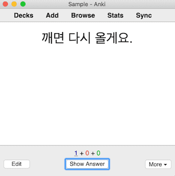
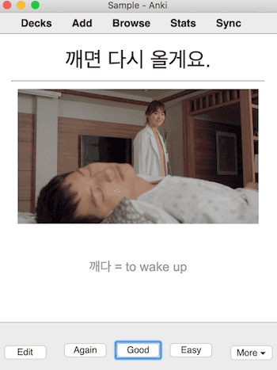

Hướng dẫn đào câu (Sentence Mining) cơ bản
Có không nhiều những hướng dẫn về "Đào câu" hay Sentence Mining bằng Tiếng Việt nên đây là bản dịch mình dịch bên Tiếng Anh sang, trang gốc của bài viết bằng Tiếng Anh sẽ được để ở trên.
Đây là bản dịch của bài viết về Sentence Mining trên Refold
Đào câu cơ bản (Sentence Mining)
Đào câu là quá trình lấy các từ và câu trực tiếp từ quá trình "tiêu thụ nội dung vào ngoại ngữ" của bạn và học (ôn tập) chúng bằng SRS. Bạn có thể bắt đầu đào câu từ rất sớm, nhưng hầu hết mọi người đều bắt đầu quá trình này sau khi họ đã học được các cấu trúc ngữ pháp cơ bản nhất và đã ghi nhớ những từ được sử dụng thường xuyên nhất. Nếu bạn chưa hoàn thành việc học phần từ vựng phổ biến nhất, bạn có thể học xong rồi mới thực hiện đào câu hoặc bạn có thể thực hiện cả hai cùng một lúc. Do bạn chọn.
"Đào" câu là sự hài hòa giữa học và tiêu thụ nội dung vào ngoại ngữ. Bằng cách học các từ và câu trực tiếp từ nội dung bạn đã tiêu thụ, bạn đang dành sự tập trung của bản thân vào những từ phù hợp nhất với mình trong Vùng ngôn ngữ mà mình chọn (Language Domain). Vì bạn sẽ tự mình lựa chọn những từ và câu để học nên giữa bạn và từ vựng đó sẽ được hình thành một mối liên kết và xây dựng khả năng ghi nhớ từ một cách nhanh chóng và dễ dàng.
"Đào" câu là một quá trình khám phá và sáng tạo. Theo thời gian, bạn sẽ khám phá ra một phương pháp của riêng bạn.
Dưới đây là một số hướng dẫn cơ bản để giúp bạn khởi đầu trong hành trình "Đào câu" của mình
Chọn nội dung để khai thác
Với mỗi giờ tiêu thụ nội dung vào nội dung, bạn có thể sẽ gặp rất nhiều từ chưa biết mà bạn có thể học. Tuy nhiên, một số từ sẽ có giá trị thời gian của bạn hơn những từ khác. Vì bạn chỉ có thể tạo một số lượng thẻ SRS giới hạn mỗi ngày nên hãy cẩn thận lựa chọn những gì để bắt đầu đào câu
Điều đầu tiên cần xem xét là liệu bạn có thực sự cần thẻ để học không. Nếu bạn nghĩ rằng mình sẽ nhớ được một từ mà không cần SRS thì không cần làm thẻ từ đó. Một số từ rất giống với các từ trong ngôn ngữ gốc của bạn (NL - Native Language) và có thể bạn chỉ cần nghe chúng một hoặc hai lần để học chúng. Đôi khi, một từ được tạo thành từ các thành phần mà bạn quen thuộc và khi bạn thấy được mối liên kết giữa chúng, ý nghĩa sẽ được giữ nguyên.
Điều đó có nghĩa là, ban đầu, hầu hết các từ đều sẽ khó học nếu không có SRS. Khi thu gọn những gì cần "đào", hãy nhớ rằng con đường hiệu quả nhất để tăng khả năng hiểu và từ đó tiếp thu ngôn ngữ mục tiêu (TL - Targeted Language) của bạn là "đào" những câu dễ hiểu.
1. Ưu tiên những từ mà bạn cảm thấy quen thuộc.
Bạn nên làm thẻ từ vựng cho những từ xuất hiện thường xuyên trong quá trình học tập của bạn. Nếu một từ nào đó khiến bạn chú ý hoặc khiến bạn cảm thấy quen thuộc thì đó là dấu hiệu của một từ phổ biến.
2. Chọn những từ trông dễ tiếp cận.
Nếu bạn tra một từ và cảm thấy khó hiểu định nghĩa thì hãy tạm thời bỏ qua nó. Sẽ là tốt hơn nếu bạn dành thời gian và nỗ lực để học những từ trong tầm với của mình.
3. Ưu tiên những từ mà bạn muốn học.
Chỉ cần từ đó khiến bạn muốn học là bạn có thể bắt đầu rồi. Sự yêu thích của bạn với một từ vựng nhất định sẽ giúp bạn ghi nhớ từ đó dễ hơn nhiều. Điều này có thể khiến việc học từ vựng đó thực sự rất đáng, ngay cả khi nó có thể không thực sự hữu ích hoặc được sử dụng thường xuyên.
Đào câu, không phải từ
Bạn nên tạo thẻ cho các cụm từ và câu thay vì các từ riêng lẻ. Có ba lý do cho việc này.
Đầu tiên, chỉ biết nghĩa của một từ (Nghĩa ở đây là nghĩa bạn đọc trong từ điển, chứ chưa gắn liền với ngữ cảnh) là không đủ để nắm bắt hoàn toàn cách nó được sử dụng. Antimoon thể hiện điều này thông qua ví dụ về từ "account for”, đây là định nghĩa Anh - Anh của nó:
If a particular thing accounts for a part or proportion of something, that part or proportion consists of that thing, or is used or produced by it.
Bản thân định nghĩa này không giúp bạn hiểu ý nghĩa thực sự của "account for” hoặc cách nó được sử dụng. Tuy nhiên, có một câu ví dụ khiến mọi việc rõ ràng hơn rất nhiều:
Computers account for 5% of the country’s commercial electricity consumption.
Bằng cách này, để thực sự nắm bắt được cách sử dụng của một từ, bạn nên (cần) một câu ví dụ tốt
Lý do thứ hai để làm thẻ dựa trên câu là vì một từ có thể (hoặc chắc chắn có) nhiều nghĩa. Ví dụ: từ “bark” có nghĩa khác hoàn toàn tùy thuộc vào việc bạn đang nói về "dogs" hay "trees".
Việc cố gắng ghi nhớ từng nghĩa một của CHỈ một từ bằng một thẻ thường dẫn đến việc ôn tập lại các thẻ trở nên quá mệt mỏi và nặng nhọc. Sẽ hiệu quả hơn nhiều khi học một nghĩa duy nhất của một từ trong một thẻ. Đây là một ví dụ về minimum information principle (nguyên tắc thông tin tối thiểu), được giải thích kĩ hơn ở phần kế tiếp.
Tạo thẻ cho các câu thay vì các từ riêng lẻ là cách đơn giản nhất để thu gọn sự tập trung của bạn vào một cách sử dụng duy nhất của một từ đó: chỉ cần tập trung vào nghĩa của từ trong câu cụ thể (context) đó. Ngoài ra, vì các câu sẽ đến từ nội dung do chính bạn chọn nên bạn sẽ học được ý nghĩa cụ thể của từ đó một cách phù hợp nhất với mình.
Lý do cuối cùng để làm thẻ cho các câu vì nó sẽ dễ nhớ hơn. So với một từ riêng lẻ, một câu cung cấp nhiều ý nghĩa sẽ giúp bạn dễ ghi nhớ và tiếp thu hơn.
Điều này đặc biệt đúng nếu câu đó đến từ một cuốn sách hay mà bạn đã đọc hoặc chương trình mà bạn đã xem. Bạn sẽ có thể nhớ lại cảnh nhân vật nào đã nói câu đó và nó được sử dụng trong hoàn cảnh nào. Liên kết giữa bạn với câu đó sẽ giúp đưa từ mục tiêu (target word) vào kho ngôn ngữ của riêng bạn dễ dàng hơn nhiều.
Chọn câu 1T
Sẽ tối ưu nhất nếu bạn "đào" các câu chỉ chứa một yếu tố không xác định (cấu trúc từ hoặc ngữ pháp). Chúng được gọi là câu “một mục tiêu” (One Target) hoặc “1T”.
Một số người lo lắng việc sử dụng câu 1T là chậm và không hiệu quả, nhưng sự thật thì ngược lại. Rất nhiều thẻ mục tiêu với ghi chú rõ ràng sẽ giúp bạn đạt được mục tiêu nhanh hơn và tốn ít công sức hơn. Đây chính là nguyên tắc thông tin tối thiểu.
Nếu bạn muốn học ba từ, sẽ tốt hơn hết nếu bạn có ba thẻ khác nhau, mỗi thẻ tập trung vào một từ mục tiêu riêng lẻ.
Nếu bạn ghi cả ba từ vào một thẻ và trong khi ôn tập bạn quên một trong số chúng, bạn sẽ phải đánh trượt thẻ (Chấm điểm để SRS thực hiện thuật toán), mặc dù bạn đã nhớ được hai từ. Điều này có nghĩa là bạn sẽ phải ôn tập tiếp hai từ bạn đã nhớ.
Việc phải nhớ lại cả ba từ chưa biết cùng lúc cũng sẽ khiến thẻ khó nhớ và khó tiếp thu hơn.
Đồng thời việc ghi nhớ trên sẽ làm tăng nguy cơ gây nhiễu trí nhớ: mặc dù ba từ này không có bất kỳ mối quan hệ thực sự (intrinsic relationship) nào với nhau, việc học chúng cùng nhau có thể khiến bạn tạo mối liên kết sai giữa chúng trong đầu.
Cho gì vào thẻ từ?
Ở giai đoạn này, hãy làm thẻ đơn giản nhất có thể: đặt nội dung của câu lên mặt trước. Ở mặt sau, ghi định nghĩa của từ mục tiêu và (cái này tùy bạn) ảnh chụp màn hình của cảnh mà câu được lấy ra (Trong một video hoặc một bộ phim).
Hãy nhớ rằng: mục tiêu của những thẻ này là nâng cao khả năng hiểu biết của bạn. Vì vậy, hãy giữ cho thẻ của bạn đơn giản và tự chấm điểm dựa trên mức độ hiểu câu ở mặt trước của bạn.
Đây là một ví dụ:
Mặt trước

Mặt sau

Khi nào cần đào thẻ
Có hai cách tiếp cận chung để "đào" câu: "tự động" và "thủ công".
Khai thác tự động bao gồm việc sử dụng phần mềm giúp tự động lấy câu 1T từ nội dung tiêu thụ của bạn và biến chúng thành thẻ. Đây là một việc cần mày mò nên để làm sau nha
"Đào" câu thủ công bao gồm việc tự tay chọn những câu nào để học từ nội dung tiêu thụ của bạn và tự tạo thẻ. Bạn có thể thực hiện "đào" câu thủ công trong quá trình tiêu thụ nội dung, trong lúc intensive immersion (tiêu thụ nội dung sâu) hoặc free-flow immersion (Tiêu thụ nội dung tự do). Hãy thử cả hai để bạn có thể biết rằng cả hai đều phù hợp với bạn hoặc cách này phù hợp hơn cách kia (Bạn nên tra cụ thể về hai cách sau).
Có hai cách để thực hiện "đào" câu thủ công: đồng bộ (synchronous) và không đồng bộ (asynchronous).
Trong "Đào câu đồng bộ" (synchronous mining). khi bạn bắt gặp một câu mà bạn muốn học trong khi tiêu thụ nội dung, bạn sẽ tạm dừng quá trình đó lại và tạo một thẻ cho câu ngay lúc đó. Lợi ích của cách tiếp cận này là quá trình tiêu thụ nội dung chủ động và "đào" câu của bạn sẽ thống nhất thành một hoạt động duy nhất. Điều này có thể giúp cho thói quen học ngôn ngữ tổng thể của bạn được hợp lý hóa hơn.
Một số người thấy "Đào câu đồng bộ" làm gián đoạn quá trình tiêu thụ nội dung của họ. Họ thích "Đào câu không đồng bộ" , tách biệt việc tạo thẻ khỏi quá trình tiêu thụ nội dung. Trong "Đào câu không đồng bộ", vào lúc tiêu thụ nội dung, bạn chỉ cần ghi chú các câu và từ bạn muốn học. Bạn có thể làm điều này bằng cách sao chép và dán câu vào tệp văn bản bất kì hoặc đánh dấu mốc thời gian của câu (Trong phim hoặc video bạn xem). Sau đó, bạn xem qua các câu bạn đã thu thập và tạo các thẻ cho chúng.